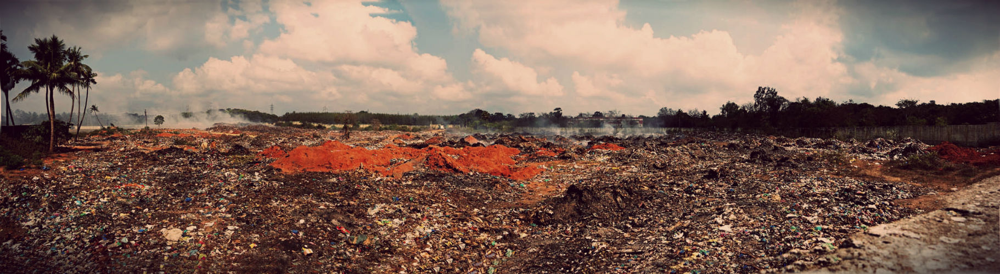
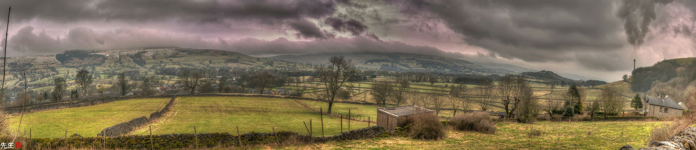

E N A C T U S - L E I C E S T E R
E L E C T R O N I C - W A S T E
The electronic waste project aims to address the issue of unsafe recycling of electronic waste in the world.
Unsafe recycling of electronic waste is both detrimental to the environment and to people's health. Because most of this recycling is done in areas of poverty, it results in difficult situations where people are unable to afford healthcare and where damage to the environment may decrease the attractiveness to future investment to develop infrastructure and the economy. This results in long term poverty to the area and its people.
Current recycling methods involve burning electric cables and components which releases toxic chemicals into the air that when inhaled and absorbed remain in the body. Contact with heavy metals present in electrical components is another hazard, as are potential explosions and the release of ignited chemicals.
The removal of metal from plastics is also carried out by dissolving the metals in acid. The used acid is then discarded into the environment, polluting rivers and groundwater which many people use on a daily basis.
Our project aims to address the issue by providing both safety materials such as gloves and goggles and innovative recycling tools that eliminate the requirement to burn components to salvage metals. By tying in education on the matter and a supply chain of the production of the safety materials we hope to provide people in the areas we help the means to be self sufficient in their ability to undergo safer recycling.
Ideally through the tools provided recyclers we will be able to recycle components more efficiently, earning more money and also safely.
Accra, Ghana is the current target of our efforts due to the scale of the problem there and also due to the area having receive previous aid in electronic waste recycling. Should the project work well in Accra, we hope to spread it to other cities and countries affected.
Project Leader Contact Details:
enactusleicesterewaste@gmail.com